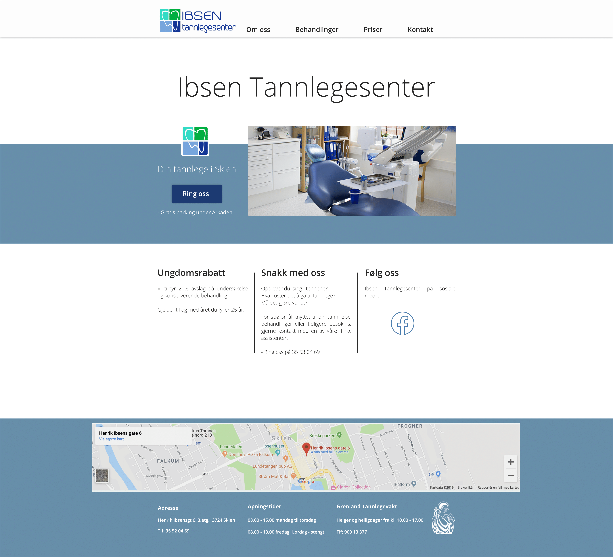
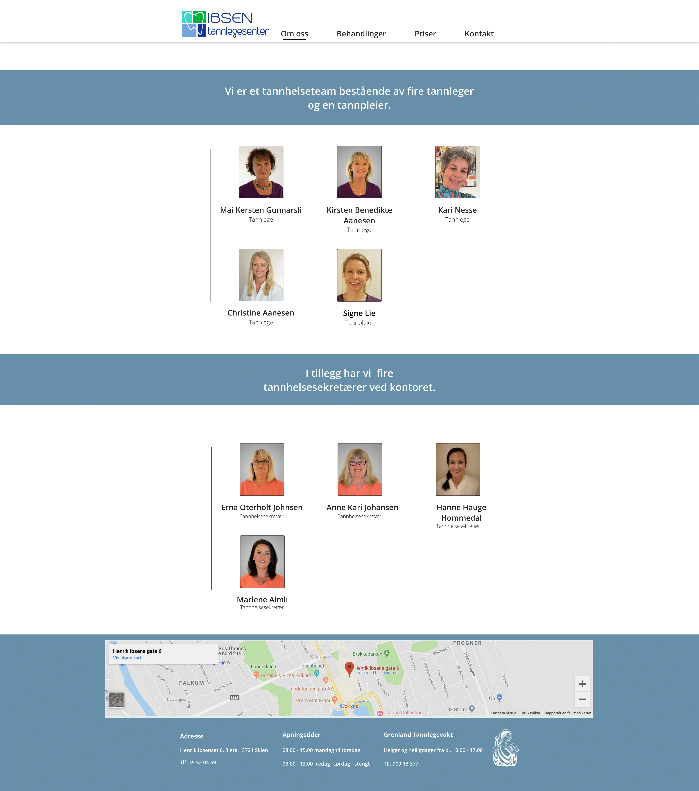
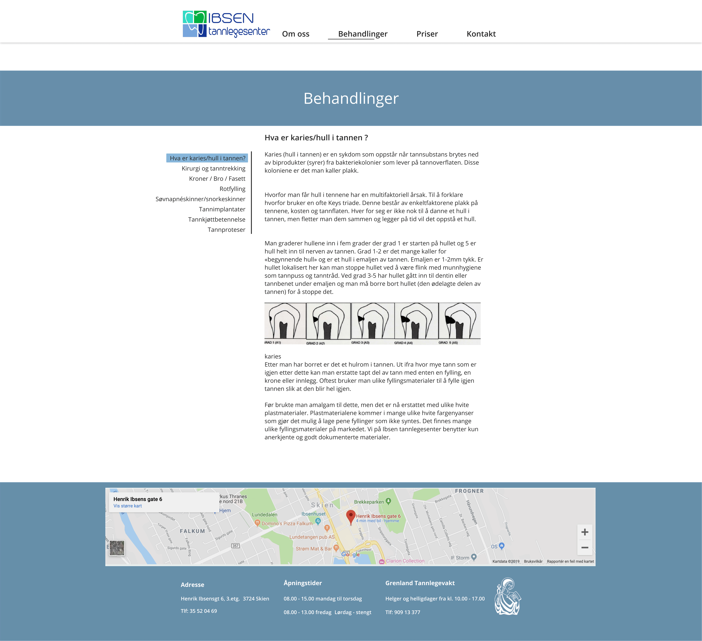
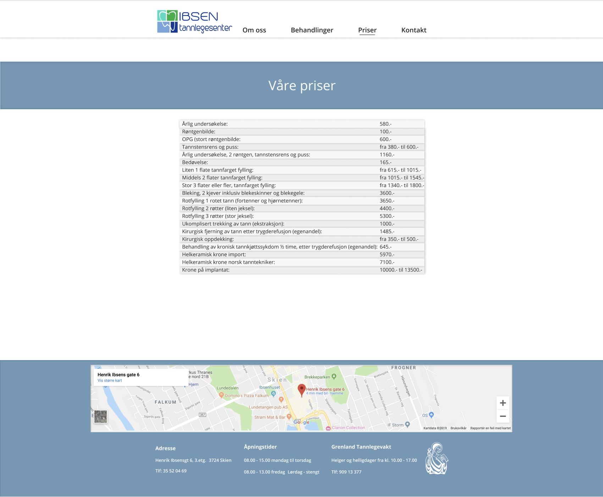
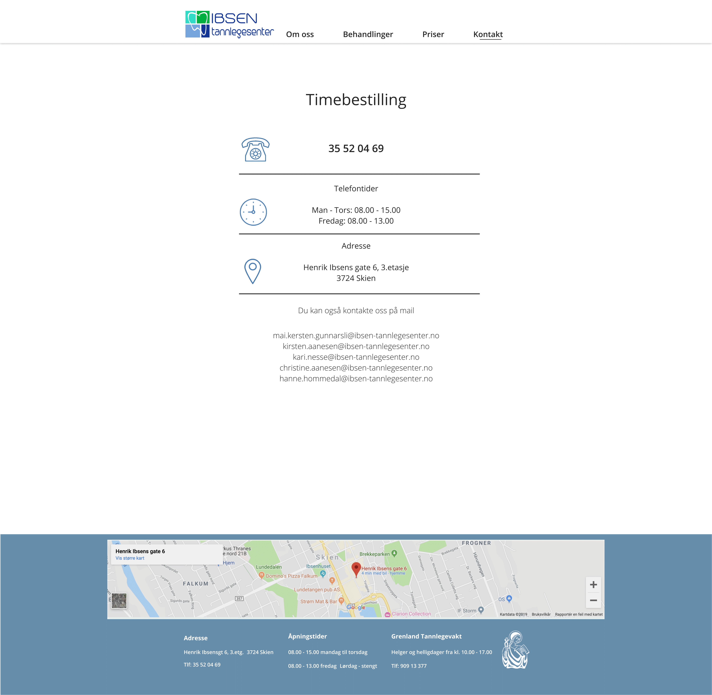

Our client, Ibsen tannlegesenter, is a dental clinic in Skien, Norway. They already have an existing website, but they want something simpler, more professional and up-to-date. This is the link to their existing website: www.ibsen-tannlegesenter.no
The main purpose of this website is to give the visitor the clinic’s contact info as easily as possible. Another purpose is to advertise that the clinic is providing youth discount. The site also provides information about different treatments, prices and employees. The main audience is existing customers, but also very relevant for new potential customers.
The navigation structure of the website can be described as clique. We have chosen a clique structure because we want the visitor to have as much freedom as possible. A navigation bar will be visible at the top at all times. Through this bar one can easily access the other main elements of the page (om oss, behandlinger, ungdomsrabatt, kontakt). The website is not particularly complex, and therefore the user will find the navigation to be swift and seamless. We have chosen to remove the price and the dental health link from the navbar compared to the already existing website. This was done to give the site a cleaner look and give more focus to the more important remaining links. The contact link is placed on the right side to make it easy to find.
We will be using the font Open Sans, colored #252424. The reason for this is a clean look, and easy readability. Sans-Serif fonts are preferred over Serif on webpages, as the decorative strokes extending from each letter, in Serif, are not rendered well by lower resolution screens. The background color will be #FFFFFF, and the color of the footer will be #6F97B5. The header will have the same color as the background, however, there will be a line that separates these. The navbar will be on top of the page and will always be visible when you scroll down the site. The footer will stay at the bottom. Some headers have separation lines, the color is the same as the footer. We want to make a simple and modern, yet a fluid and responsive web design, because the site should be easily accessible for all types of different users. By this we also mean that the site will be able to scale to fit different screen sizes. Our client required that we use the colors from the logo, since the colors are relevant in the dental health sector and in the clinics building. We discussed with our client and came to the conclusion to use shades of the logo colors to fulfill the harmonic appearance, also to make the site more comfortable to look at. This website is an informing site, and therefore we emphasis to make it as clean and simple as possible. The relevant information should be provided easy and fast. The decisions made above will hopefully give the audience a professional impression of the site.The font sizes that will be used are listed below.
Font sizes:
Some content will be the same on every page. This relates to both the header, separation lines and the footer. The header will be white, and consist of Ibsens Tannlegesenter's logo, which is placed to the left, and the text, that works as a link to the the the other pages. The footer will have the color #6F97B5 (light blue). In the footer there will be using the google API for map service, which guides you to the address, and below the map, there will be general information like phone-number and opening hours. There will also be an illustration of the "Den norske tannlegeforening", which shows that Ibsens Tannlegesenter is a part of this union.
The landing page is the first page that will appear when users visit the website. The goal with the landing page is to let the user know that they have come to the right website. Also we want the user to easily find a way to get to the contact information. On top of the page there will be a big header with the name of the client, "Ibsens Tannlegesenter". Above the header there will be a button called "Ring oss". This button will send you to the “Kontakt oss” page. Alongside the button there will be an image slideshow. This slideshow will show pictures of the dental clinic. After a set amount of seconds, a new picture related to the dental service will show. Below the slideshow there will be small headers, with a paragraph related to the header, e.g. “Ungdomsrabatt” and a text describing the discount and such.
The "Om oss" page will show pictures of all the employees at Ibsens Tannlegesenter. The pictures will be clickable, and if clicked, information about the selected employee will show. This information will be about their career (Experience, education, etc.). The goal of this page is to provide information for the visitor about the people who work at Ibsens Tannlegesenter.
The "Behandlinger" page will provide a list of all treatments, and their price, that are done on at Ibsens Tannlegesenter. If you click on one of the treatments, information about how the treatment is done, the process behind it, and an explanation of the effects will show. The main goal of this page is to list all treatments provided, and their price at Ibsens Legesenter. It also give visitors the opportunity for an insight of the treatment they want.
The pricing page will be showing a table with all the prices of the different services our client offers. This information will be provided with the same styling as the other pages.
This page will provide phone-number, opening hours, address and e-mail. An icon related to the information, will be put to the left. E.g. icon of a clock, will be to the left of the opening hours and a phone to the left of the phone number. The main purpose of this page is to give clear and easy access to the most important contact information. We want it to be easy for the visitor to get in contact with the dentist.
We plan to fulfill the minimum requirements of four Javascript applications in this way
When you scroll down on the site, the top bar menu will shrink in size. The logo will shrink to a smaller size, but the menu text-links will stay the same. This is done to provide more space to the other information on the site.
When you scroll down on the site, a pop up scrolling icon will appear in the bottom right corner. When you click on the icon, it will scroll you back to the top of the page.
On the front page, the image in the middle will slide between a set of different images of the clinic with a preset amount of seconds.
When you click on the images of the employees in the about us site, there will be a pop-up information box with information about the employee. When the pop-up appears the background will be slightly blurred out.
| What | Responsible | Deadline |
|---|---|---|
| Make files and structure it | Trym | 14.10 |
| Link the files to each other | Per Olav | 15.10 |
| Header and footer template | Andreas | 22.10 |
| Structuring index.html | Thomas | 22.10 |
| Structuring om_oss.html and priser.html | Haakon | 22.10 |
| Structuring behandlinger.html | Trym | 22.10 |
| Structuring kontakt.html | Per Olav | 22.10 |
| Styling, style.css | All | 30.10 |
| Javascript | Haakon and Andreas | 1.11 |
| Testing and final editing | All | 9.11 |
| Deliver the project | Thomas | 10.11 |